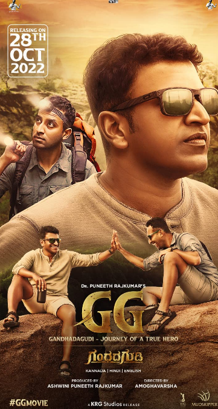

Param (Puneeth Rajakumat), son of heart specialist Jayanth, is eager to know many things in life. He keeps shuffling from one place to another. A gold medalist in Bachelor of Science.

2. (2022)
⭐9.6Rate: /10.
An epic musical celebration of India's blessed land, precious culture and incredible stories at an unprecedented scale, complete with songs and the beauty of nature.
3. (2022)
⭐9.0Rate: /10.
It involves culture of Kambla and Bhootha Kola. A human and nature conflict where Shiva is a rebel who defends his village and nature. A death leads to war between villagers and evil forces. Will he able to regain peace in the village?
4. (2022)
⭐8.4Rate: /10.
In the blood-soaked Kolar Gold Fields, Rocky's name strikes fear into his foes. While his allies look up to him, the government sees him as a threat to law and order. Rocky must battle threats from all sides for unchallenged supremacy.